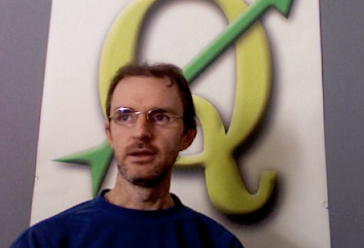

12. ရေးသားပြုစုသူများနှင့် ပါဝင်ကူညီသူများအကြောင်း (About the authors & contributors)
 |
Tim Sutton — တည်းဖြတ်သူ နှင့် ဦးဆောင်ရေးသားပြုစုသူ။ Tim Sutton သည် developer တစ်ဦးဖြစ်ပြီး QGIS project ၏ စီမံကိန်းကွပ်ကဲမှုကော်မတီ အဖွဲ့ဝင်တစ်ဦးဖြစ်ပါသည်။ သူသည် GIS ကိုလူတိုင်းမှ အခမဲ့အသုံးပြုနိုင်စေရေးအတွက် စိတ်အားထက်သန်သူဖြစ်ပါသည်။ Tim သည် Linfiniti Consulting CC. စတင်ဖွဲ့စည်းသည့် အဖွဲ့ဝင်တစ်ဦးလည်းဖြစ်ပါသည်။ Linfiniti Consulting CC. သည် အခမဲ့ GIS software များကို လူအများ အသုံးပြုနိုင်စေရန်နှင့် လေ့လာနိုင်စေရန် အကူအညီပေးရေးရည်ရွယ်ချက်ဖြင့် ဖွဲ့စည်းထားသော စီးပွားရေးငယ်တစ်ခုဖြစ်ပါသည်။ |
|
Otto Dassau — လက်ထောက် ရေးသားပြုစုသူ။ Otto Dassau သည် မှတ်တမ်းမှတ်ရာများ ထိန်းသိမ်းသူဖြစ်ပြီး QGIS project ၏ စီမံကိန်းကွပ်ကဲမှုကော်မတီ အဖွဲ့ဝင်တစ်ဦးဖြစ်ပါသည်။ Otto သည် အခမဲ့ GIS software များအသုံးပြုခြင်းနှင့် လူအများကိုသင်တန်းများပို့ချခြင်း အတွေ့အကြုံများရှိပါသည်။ Web: http://www.nature-consult.de Email: otto.dassau@gmx.de |
Marcelle Sutton — ပရောဂျက်မန်နေဂျာ။ Marcelle Sutton သည် အင်္ဂလိပ်စာနှင့် ပြဇာတ်ရေးသားတင်ဆက်ခြင်းပညာကို လေ့လာခဲ့ပြီး အရည်အချင်းပြည့်မီသော ဆရာမတစ်ဦး ဖြစ်ပါသည်။ Marcelle သည် Linfiniti Consulting CC. စတင်ဖွဲ့စည်းသည့် အဖွဲ့ဝင်တစ်ဦးလည်းဖြစ်ပါသည်။ Web: https://kartoza.com Email: marcelle@kartoza.com |
|
|
Lerato Nsibande –– ဗီဒီယို တင်ဆက်ပြသသူ။ Lerato သည် Pretoria တွင်နေထိုင်သော grade 12 စကော်လာတစ်ဦးဖြစ်ပါသည်။ Lerato သည် ကျောင်းတွင် Geography (ပထဝီဝင်ပညာ) ကိုလေ့လာပြီး GIS လေ့လာရခြင်းကို ပျော်ရွှင်သူဖြစ်ပါသည်။ |
Sibongile Mthombeni –– ဗီဒီယို တင်ဆက်ပြသသူ။ Sibongile သည် သူမ၏သမီးငယ်နှင့်အတူ Johannesburg တွင်နေထိုင်ပါသည်။ သူမ၏ရည်မှန်းချက်မှာ စာဆက်လက်လေ့လာပြီး သူနာပြုတစ်ဦးဖြစ်ရန် ဖြစ်သည်။ ဤ project တွင် အလုပ်လုပ်ကိုင်သည့်အချိန်မှသာ Sibongile သည် ကွန်ပျူတာကိုစတင်အသုံးပြုခဲ့ခြင်းဖြစ်ပါသည်။ |